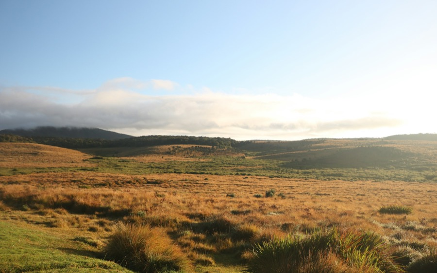

1Horton Plains & World’s End
A high plateau with a 9.5 km walking loop that leads to World’s End — a cliff with a drop of around 880 m — and Baker’s Falls. It is not near town: 32 km and about an hour on a narrow mountain road, which is why the early start matters.
From town32 km · about 1 h from town
OpenGate opens 6 AM · last entry mid-afternoon
Give it3–4 hours on the loop
Ticket≈ Rs 7,000 foreign adult · pay at the gate
From our driversGo first thing in the morning. By mid-morning the mist usually rolls in and the view disappears. No phone signal on the plains — download the map before you leave the hotel. Leave the hotel by 5:30 and you’ll be at World’s End before the tour buses. Bring a jumper you can take off — it’s 8° at the gate and 20° by ten.
5:30 AM pickup with Ceylon HopWait at the park and the drive back includedAsk for a price →